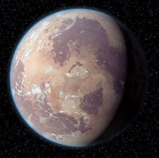

"Аколіт" мертвий: серіал за мотивами всесвіту Зоряних Воєн не планує продовження - Variety

Lucasfilm вирішив не продовжувати серіал від Disney+ після його першого сезону, який зображував появу ситхів приблизно за 100 років до подій «Прихованої загрози».
Ця новина відразу стала шоком, враховуючи те, що більшість фіналу сезону 1 закінчилася безвихідно та викликала кілька сюжетних ліній для сезону 2, і не дуже сюрприз, враховуючи шалено протилежне сприйняття фанатами та менш ніж... значну кількість глядачів, яка впала після прем’єри серіалу в червні.
ПЛАНЕТИ
Рандомний факт

Ситхське ім'я графа Дуку - Дарт Тиранус. Хоча у фільмах він ніколи не згадувався під цим ім'ям, його він здобув після того, як перейшов на темну сторону сили під впливом Дарта Сідіуса, та, в більшості, своїх ідеалів.
Попри те, що він колись був джедаєм та навіть мав падавана на ім'я Квай-Гон Джин, який, власне, був вперше екранізований у "Прихованій загрозі", вивчаючи глибше його історію поступово розумієш чому він так поступив. Частково це можна зрозуміти з недавно екранізованого анімаційного серіалу "Історії джедаїв", де він, ще будучи джедаєм, приймав складні психологічні рішення, що в результаті й привели його до того, до чого він йшов - темної сторони.
ТУТ МОЖЕ БУТИ ВАША РЕКЛАМА
Татуїн
Легендарна пустельна планета, що обертається навколо сонць-близнюків у Зовнішньому Краї галактики, Татуїн — це беззаконне місце, яким правлять банди, в більшості Хатти. Це планета, на якій поклав свій початок рід Скайвокерів. Жителі планети заробляють на життя на вологих фермах, а міста-космопорти, такі як Мос-Ейслі та Мос-Еспа, служать базою для контрабандистів, злочинців та інших шахраїв.
Корусант
Планета, вкрита містами, Корусант є яскравим серцем і столицею галактики, де представлено різноманітне поєднання громадян і культури. Тут представлені високі хмарочоси, потоки сповненого швидкісного повітряного транспорту та внутрішні рівні, що простягаються далеко під поверхнею світу.
Набу

Ідилічний світ, розташований неподалік від кордону територій Зовнішнього краю, Набу населена миролюбними людьми, і місцевим видом розумних амфібій, які називаються Гунгани. Поверхня Набу складається з болотистих озер, горбистих рівнин і зелених пагорбів.
Альдераан

Якщо вам колись знадобився приклад непоправного зла, яким була Імперія, зверніться до зруйнованих залишків Альдераана. Впливовий світ, Альдераан був представлений у дні заходу Республіки такими шанованими політиками, як Бейл Антіллес і Бейл Органа
Дагоба

Дагоба, домівка для Йоди в останні роки його існування, була вкритою болотами планетою — забутим світом, де сухорлявий майстер-джедай міг сховатися від уваги імперських сил. Похмуре й вологе болото, яке характеризувалося своїми болотистими умовами та смердючими заболоченими територіями, було нерозвиненим, без жодних ознак технології.